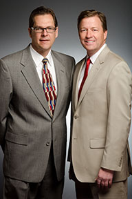

About Harding & Associates, Attorneys at Law

We represent clients on an hourly, contingency and flat fee basis depending on the type of case. Call us and see how our expertise can help you resolve your legal issues. If you think you might need an attorney, please contact us by phone or email. We would be glad to make arrangements for a free initial consultation.
Harding & Associates, P.C. was established by Phil Harding in January of 1995. From the onset our firm has been devoted to promoting justice through civil litigation. Although we are able to settle many of our clients’ cases without ever stepping foot in the courtroom, we are willing and able to proceed to trial and beyond to the Court of Appeals and Supreme Court when necessary. In short, we are litigators who will do everything in our power and as prescribed by law to further our clients’ objectives. We feel that our clients deserve nothing less than aggressive and enthusiastic representation along with sound and highly competent legal advice.
In the early years, the firm primarily represented individual plaintiffs in personal injury actions, however, as our firm expanded so too did our list of clientele and our fields of practice.
We continue to represent individuals from all walks of life and now represent businesses large and small. Our clients are located within the Denver Metro Area and throughout Colorado. The one thing that all of our diverse clientele have in common is that they have suffered damages as a result of another’s actions. We believe in the principle that justice should come to those who deserve it, not only to those who can afford it. Thus, we are committed to providing as much attention and expertise to our individual clients and their cases as we are to our corporate clients.
Although much of our practice continues to be devoted to representing individuals in their actions for personal injuries, we also represent individuals and corporations involved in disputes ranging from contract actions to shareholder derivative actions. The injuries to our clients may stem from bodily harm and death to property damage and damaged business interests. We have particular expertise in wrongful death actions, automobile collision cases, insurance company bad faith, premises liability, construction law, negligent entrustment, liquor store/dram shop liability and business litigation. We are continuing to expand our practice into the areas of unsafe products, toxic torts, animal law and environmental damage litigation.